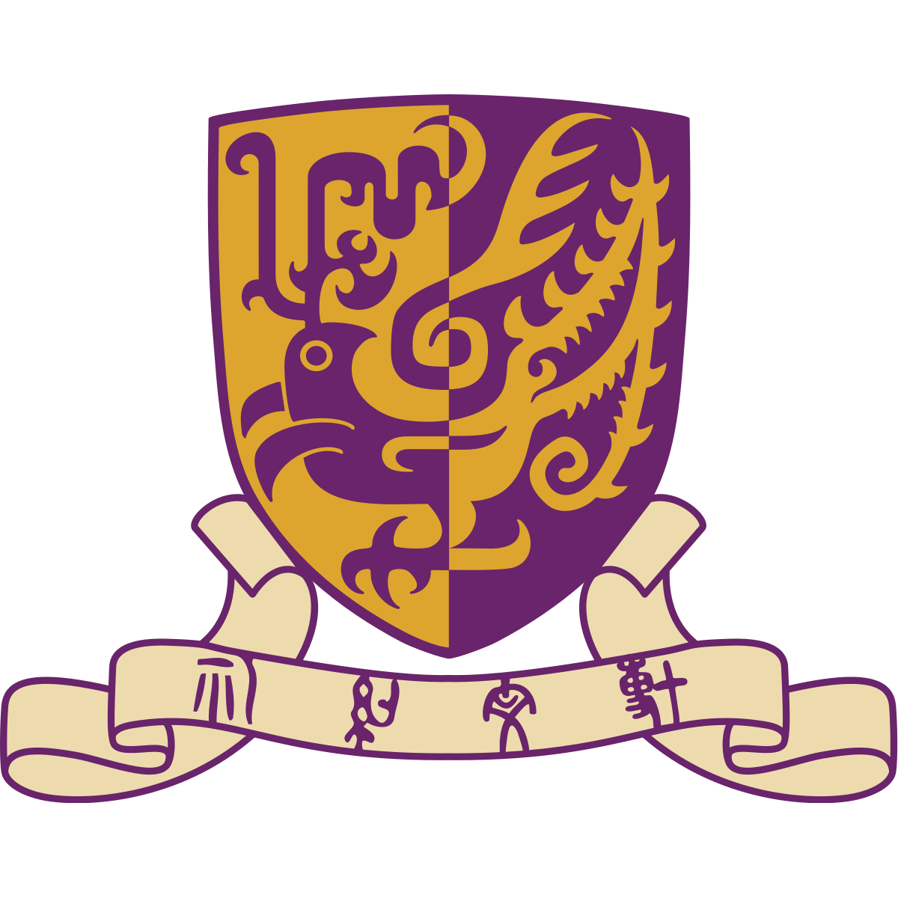
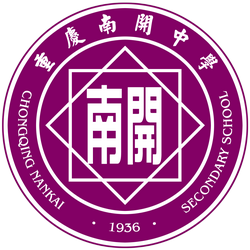
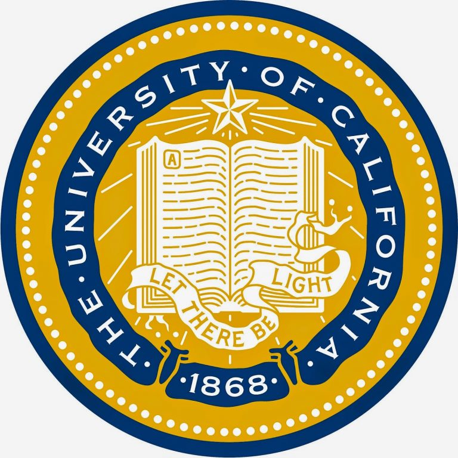
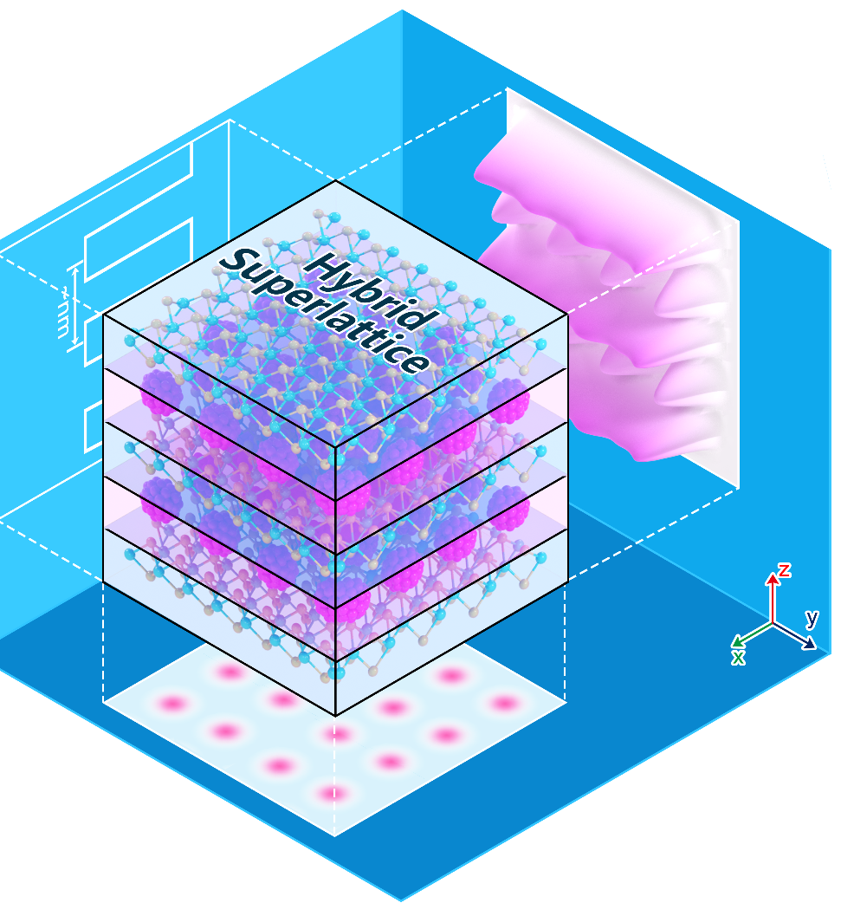
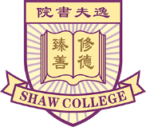

ONGOING · STATISTICAL PHYSICS
Data-Free Generative Sampling of the Two-Dimensional XY Model
Adapting Stochastic Path Sampling (SPS) to periodic XY angles, with reproducible evaluation of physical statistics and sampling efficiency.
Explore project →PHYSICS × AI FOR SCIENCE
Jiaxin (Jeremiah) Pan
Undergraduate researcher · CUHK-Shenzhen
ONGOING · STATISTICAL PHYSICS
Adapting Stochastic Path Sampling (SPS) to periodic XY angles, with reproducible evaluation of physical statistics and sampling efficiency.
Explore project →ONGOING · HSSRLM
Exploring compact crystal descriptors, data provenance, rule-based verification, and reproducible evaluation for language-assisted materials research.
Explore project →ABOUT ME
I am a Physics undergraduate (Class of 2027) at The Chinese University of Hong Kong, Shenzhen, specializing in AI for Science (AI4S) and Generative AI. I entered the university in 2023 and transferred from Business Economics to Physics in 2024. My research draws on statistical mechanics to study generative sampling in physical systems, interpretable representations for materials research, and language-model reasoning.
My academic journey also includes hands-on experience in 2D electronics and quantum physics, alongside visiting studies at UC Berkeley and the University of Auckland. Beyond research, I am actively engaged as an Undergraduate Course Tutor and am a multi-year recipient of the Dean's List honour and College Scholarships.
Huawei Certified ICT Associate — Artificial Intelligence · 2025 · Valid through Dec 2028
CUHK-Shenzhen · Class of 2027 · transferred from B.B.A. in 2024
University of Auckland · Physics, CS & AI
UC Berkeley Extension · Physics & Neuroscience

The Chinese University of Hong Kong, Shenzhen
Transferred from Business Economics in 2024; currently majoring in Physics.
The Chinese University of Hong Kong, Shenzhen
Completed Year 1 foundation courses before transferring to the B.Sc. Physics program to pursue my passion for sciences.

Chongqing Nankai Secondary School · Chongqing, China

University of California, Berkeley Extension · Berkeley, CA, USA
Completed coursework in physics and neuroscience; enhanced cross-cultural academic communication and independent learning skills.
University of Auckland · Auckland, New Zealand
Nominated by CUHK-SZ; completed advanced coursework in Physics, Computer Science, and AI (COMPSCI 361, COMPSCI 220).
Undergraduate Researcher · The Chinese University of Hong Kong, Shenzhen · Supervised by Prof. ZHOU Kai
Adapting Stochastic Path Sampling (SPS) to the XY model without pre-generated equilibrium training data, and evaluating physical statistics, sampling efficiency, and rejection behavior in a small-lattice study.
Status: Training-budget experiment complete; analysis and report preparation underway.
Earlier exploration used supervised Flow Matching trained on Wolff-generated configurations. Current SPS training uses the XY energy and forward/backward path probabilities; Wolff configurations serve only as an independent validation reference. Python and PyTorch experiments run on GPUs through Slurm.
The study compares three seeds, checkpoints at 5,000, 10,000, and 15,000 parameter updates, and 32, 64, and 128 generation steps. Evaluation covers energy, vortex counts, magnetization, spatial correlations, acceptance, effective sample size per sampling second, and consecutive rejection streaks.
Estimated energy sampling efficiency increased in all nine seed/step settings from 5,000 to 10,000 updates. From 10,000 to 15,000, six improved and three declined. All nine settings at both later checkpoints passed predefined physical-statistics screening criteria, providing supporting evidence rather than proof of complete equilibration. High relative path weights can cause prolonged MH rejection streaks; acceptance rate alone does not determine efficiency.
The motivation is to investigate critical slowing down near the Berezinskii–Kosterlitz–Thouless (BKT) transition. Current experiments cover a 4×4 lattice at one temperature near the expected transition; they do not establish thermodynamic critical behavior, a solution to critical slowing down, universal convergence, or an advantage over Wolff sampling. This is a method-adaptation study; SPS is an existing method.
The display title is provisional and is not a finalized thesis title.
HSSRLM · AI for Science
Exploring compact crystal descriptors as an interpretable interface between natural language and porous materials, with an emphasis on data provenance, rule-based verification, and reproducible evaluation.
Status: Framework implementation and targeted reliability audits completed; broader dataset validation and model evaluation remain in progress.
HSSR (Hierarchical Structure-Sequence Representation) organizes composition, lattice parameters, symmetry, topology, building units, and selected pore-related properties into structured text for metal–organic frameworks (MOFs) and zeolites. The repository implements a T5 (Text-to-Text Transfer Transformer) framework for bidirectional translation between natural language and descriptors; broader model evaluation remains in progress.
The framework includes evidence-aware Crystallographic Information File (CIF)-to-descriptor preprocessing that distinguishes known, inferred, and missing information, preserves provenance, and routes incomplete records for review. Candidate screening checks descriptor format and node/linker/topology connectivity, reports failures explicitly, and tracks duplicates at the descriptor level.
Reproducible structure-equivalence audits examine equivalent representations and information lost by coarse descriptors in three publicly sourced MOF structures. An expanded 26-record metal-node registry addresses ambiguous aliases and preserves source material for continued chemical validation.
HSSR outputs are material descriptors, not complete atomistic structures in Crystallographic Information File (CIF) format: they lack complete atomic coordinates and a full bonding graph. Verification indicates compatibility with implemented rules, rather than proof of physical validity or synthesizability. The three-structure audit is a limited study and does not establish universal representation invariance.
CrysSpec (Crystal Specification) is a provisional working name.
The Chinese University of Hong Kong, Shenzhen · Second Undergraduate Research Conference
Presented “Self-Confidence in Math and STEM Major Choice at CUHK-Shenzhen” at my first research conference.
CUHK-SZ
(Group Leader) Led a team in investigating optical properties of semiconductors; conducted literature review, authored final report, and delivered class presentation.
CUHK-SZ
(Group Leader) Led a team in exploring experimental verification of Bell's theorem; delegated tasks, co-authored final report, and delivered final presentation.
CUHK-SZ
Synthesized research data and methodologies from team members to author the final report using LaTeX.
CUHK-SZ
(Group Leader) Led a team in exploring the topic of "Observation of Bose-Einstein Condensation in a Dilute Atomic Vapor"; delegated tasks, conducted literature review, co-authored presentation slides using LaTeX, and delivered final presentation.

CUHK-SZ · Prof. QIAN Qi's Lab
Fabricated and characterized high-performance MoS2 transistors using advanced van der Waals integration and dry transfer of 2D heterostructures. Successfully achieved polarity modulation (N-type to P-type) by engineering metal-semiconductor contacts, effectively overcoming traditional interface defects and reaching high device performance. Gained hands-on experience in nanofabrication and electrical characterization techniques; conducted literature review and authored a comprehensive end-of-term project report.
INSAIT (Institute for AI and Tech) · Bulgaria / Remote
CUHK-SZ School of Science and Engineering
Provided tutoring in the Student Help Room as a USTF for CSC1005 (Intro. to Computer Engineering), CSC1001 (Intro. to Computer Science), and PHY1001 (Mechanics), 23 October–12 December 2025.
CUHK-SZ Office of Academic Links (OAL) · Australia & New Zealand Group
Recognized by OAL for exemplary performance, demonstrating outstanding leadership, communication skills, creativity, and enthusiasm.
University of Auckland · Auckland, New Zealand · March – June 2026
Regularly produced and posted engaging multimedia content for the official UoA Study Abroad Instagram account, connecting students from around the world; recognized as the most prolific ambassador with the highest total likes across all posts, receiving official commendation from the Study Abroad Team for exceptional content quality and engagement.
Self-Employed
Tutored students in CET-4, college entrance English, and international middle school math (Big Ideas Math curriculum); customized lesson plans to improve student performance.
New Oriental Education & Technology Group · Chongqing, China
Assisted lead instructors in English classes; supported classroom management, prepared materials, and communicated with parents about student progress.
Management
Organized academic events and coordinated internal operations for the Physics Society.
Core Management · Head of Secretary Department
Managed documentation, social media content, and event logistics for the Economics Club.

Student Helper
Produced WeChat content, provided multimedia support, and assisted in organizing and managing campus events.
Research Assistant
Supported research documentation through field photography and video editing; assisted professors in data organization.
Issued by Huawei Technologies Co., Ltd. (Valid through Dec 2028). Certificate No. 010102001810062372927192.
CUHK-SZ
Awarded based on outstanding 2023 Gaokao score.
Philip Yu Hong Wong Anita Fung Yee Leung Full-tuition Scholarship.
CUHK-SZ School of Management and Economics
Recognized for academic excellence in AY2023–2024.
CUHK-SZ School of Science and Engineering
Recognized for academic excellence in AY2024–2025.
CUHK-SZ School of Science and Engineering
Recognized for academic excellence in AY2025–2026.
Certificate pending issuance.
CUHK-SZ Shaw College
Recognized for resilience and perseverance in overcoming personal and academic challenges.